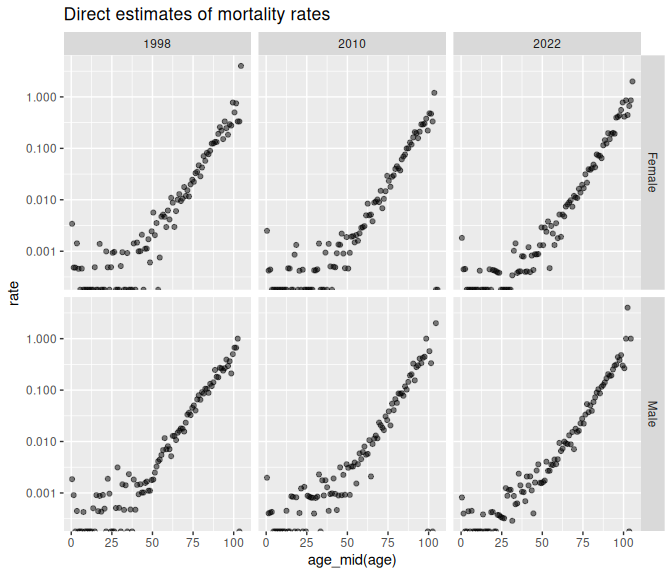
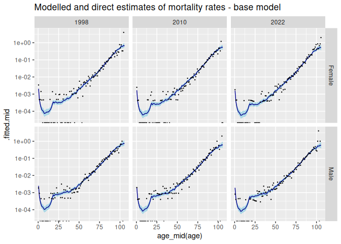
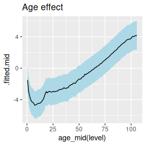
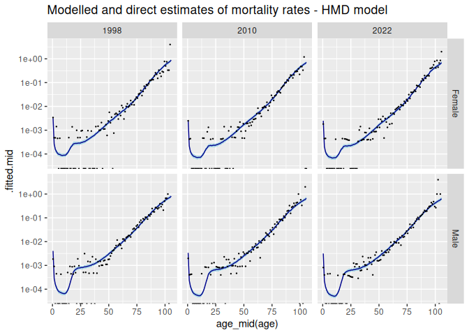
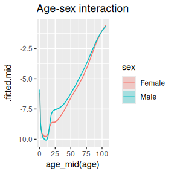
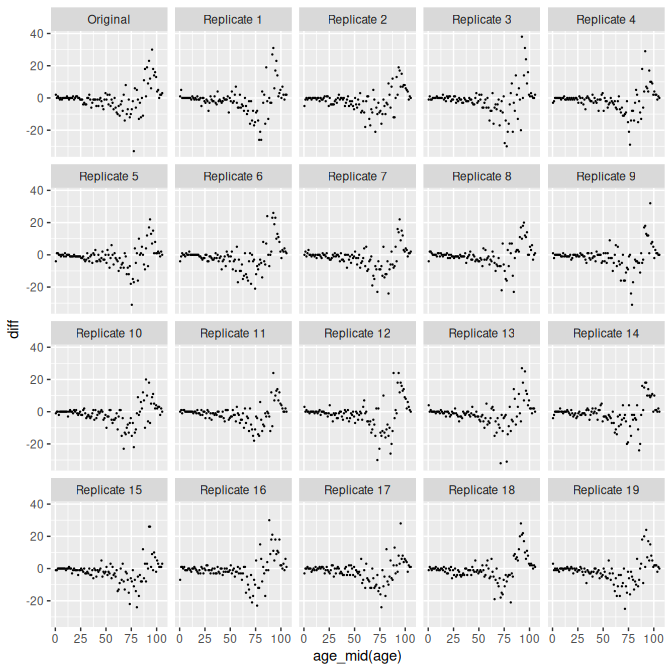

1 Introduction
In this vignette, we estimate mortality rates, and summary indicators such as life expectancy. We work with data from Iceland. We try several methods for representing age patterns, including one that uses typically patterns from the Human Mortality Database. All our model-based estimates come with measures of uncertainty.
In addition to bage itself, we need package poputils, which contains functions for calculating life expectancy, and rvec, which contains data structures and functions for working with random draws.
library(bage)
#> Loading required package: rvec
#>
#> Attaching package: 'rvec'
#> The following objects are masked from 'package:stats':
#>
#> sd, var
#> The following object is masked from 'package:base':
#>
#> rank
library(poputils)
library(rvec)We use standard tidyverse tools for data manipulation and graphing.
2 The data
The Iceland deaths data is included in the bage package. It contains counts of deaths, and estimates of the mid-year population, disaggregated by age and sex, for the years 1998–2022.
dth <- bage::isl_deaths
dth
#> # A tibble: 5,300 × 5
#> age sex time deaths popn
#> <fct> <fct> <int> <int> <dbl>
#> 1 0 Female 1998 7 2051
#> 2 1 Female 1998 1 2082.
#> 3 2 Female 1998 1 2088
#> 4 3 Female 1998 3 2112.
#> 5 4 Female 1998 1 2204
#> 6 5 Female 1998 0 2232.
#> 7 6 Female 1998 1 2175
#> 8 7 Female 1998 0 2240
#> 9 8 Female 1998 0 2261
#> 10 9 Female 1998 0 2182.
#> # ℹ 5,290 more rowsThe oldest age group is 105 years and older.
tail(dth, n = 3)
#> # A tibble: 3 × 5
#> age sex time deaths popn
#> <fct> <fct> <int> <int> <dbl>
#> 1 103 Male 2022 0 1.5
#> 2 104 Male 2022 1 1
#> 3 105+ Male 2022 0 0The data is sparse. Twenty-two percent of death counts are 0, and half are 3 or less.
dth |>
count(deaths) |>
mutate(percent = round(100 * n / sum(n)),
cumulative_percent = cumsum(percent)) |>
head()
#> # A tibble: 6 × 4
#> deaths n percent cumulative_percent
#> <int> <int> <dbl> <dbl>
#> 1 0 1180 22 22
#> 2 1 701 13 35
#> 3 2 424 8 43
#> 4 3 333 6 49
#> 5 4 239 5 54
#> 6 5 194 4 58We plot ‘direct’ estimates of death rates in the first and least years of the data. Direct estimates are calculated by dividing the number of deaths by the corresponding population at risk, independently for each combination of age, sex, and time. The results are shown below, on a log scale. The dots at the bottom of the graph represent log-rates of negative infinity, which occur in cells where no deaths were observed. Random variation obscures any patterns before about age 50. After age 50, rates increase more or less linearly.
dth |>
filter(time %in% c(1998, 2010, 2022)) |>
mutate(rate = deaths / popn) |>
ggplot(aes(x = age_mid(age), y = rate)) + ## 'age_mid()' returns the mid point
facet_grid(vars(sex), vars(time)) + ## of the age group, which is useful
geom_point(alpha = 0.5) + ## for plotting
scale_y_log10() +
ggtitle("Direct estimates of mortality rates")
#> Warning in scale_y_log10(): log-10 transformation introduced
#> infinite values.
#> Warning: Removed 6 rows containing missing values or values outside the scale range
#> (`geom_point()`).
3 Initial model
3.1 Specifying the model
We fit an initial simple model. In our prior model, we allow for an interaction between age and sex, but do not allow for any interactions involving time. We assume, in other words, that mortality rates rise or fall at the same rate across all age-sex groups. This assumption is unlikely to be met exactly in practice, so we revisit it later. We accept all the default priors for main effects and interactions. As can be seen at the bottom of the printout, mod_pois() has guessed which variables represent age, sex, and time. (It bases its guesses on the variable names.) Age and time main effects, by default, get “random walk” priors, and other terms get “normal” priors.
But before running the model there is an annoying, but common, problem with the data with.
It turns out there are 5 cases with non-zero deaths but zero population.
dth |>
filter(deaths > 0 & popn == 0)
#> # A tibble: 5 × 5
#> age sex time deaths popn
#> <fct> <fct> <int> <int> <dbl>
#> 1 104 Male 2001 1 0
#> 2 104 Male 2007 1 0
#> 3 104 Male 2012 1 0
#> 4 104 Female 2019 2 0
#> 5 105+ Male 2020 1 0Population counts for the very old are sometimes unreliable. We modify the problematic zeros under the assumption that each person lives 0.5 person years before dying.
Our model is then
mod_base <- mod_pois(deaths ~ age * sex + time,
data = dth,
exposure = popn)
mod_base
#>
#> ------ Unfitted Poisson model ------
#>
#> deaths ~ age * sex + time
#>
#> exposure: popn
#>
#> term prior along n_par n_par_free
#> (Intercept) NFix() - 1 1
#> age RW() age 106 106
#> sex NFix() - 2 2
#> time RW() time 25 25
#> age:sex RW() age 212 212
#>
#> disp: mean = 1
#>
#> n_draw var_time var_age var_sexgender
#> 1000 time age sex3.2 Mathematical description of the model
The model implemented by mod_base assumes that
\[\begin{equation}
y_i \sim \text{Poisson}(\gamma_i w_i)
\end{equation}\]
where
- \(y_i\) is deaths in age-sex-time cell \(i\),
- \(w_i\) is the population at risk, and
- \(\gamma_i\) is the underlying death rate.
By modelling deaths as draws from a Poisson distribution, the model recognizes the contribution of individual-level randomness to observed death counts. Recognizing individual-level randomness is important when analyzing data where cell counts are small.
Death rates \(\gamma_i\) are treated as draws from a Gamma distribution,
\[\begin{equation} \gamma_i \sim \text{Gamma}(\xi^{-1}, (\xi \mu_i)^{-1}). \end{equation}\]
The expected value for \(\gamma_i\) is \(\mu_i\), and the variance is \(\xi \mu_i^2\). By modelling \(\gamma_i\) as a draw from a distribution, we are recognizing our model is only able to explain some of the variation in \(\gamma_i\). Larger values for \(\xi\) imply more unexplained variation.
We model \(\mu_i\), on the log scale, as a sum of factors formed from the the dimensions of the data, \[\begin{equation} \log \mu_i = \sum_{m=0}^4 \beta_{j_i^m}^{(m)} \end{equation}\] where
- \(\pmb{\beta}^{(0)}\) is an intercept,
- \(\pmb{\beta}^{(m)}\), \(m = 1, \cdots, 4\), is a main effect or interaction, and
- \(j_i^m\) is the element of \(\pmb{\beta}^{(m)}\) that is associated with cell \(i\).
Each of the \(\beta^{(m)}\) in the model for \(\mu_i\) receives a prior. The default prior for the intercept is \[\begin{equation} \beta^{(0)} \sim \text{N}(0, 1) \end{equation}\]
The default prior for age is a first-order random walk, \[\begin{align} \beta_1^{(1)} & \sim \text{N}(0, 1) \\ \beta_j^{(1)} & \sim \text{N}(\beta_{j-1}^{(1)}, \tau_1^2), \quad j = 2, \dots, J_1 \end{align}\] A random walk prior embodies the idea that we expect changes from one age group to the next to be relatively small, and that neighboring age groups are more strongly correlated than distant age groups.
The value for the standard deviation parameter \(\tau_1\) is estimated as part of the model, and has its own prior, \[\begin{equation} \tau_1^2 \sim \text{N}^+(0, 1) \end{equation}\] \(\text{N}^+(0, 1)\) denotes a half-normal distribution, that is, a normal distribution restricted to non-negative values.
The sex main effect has the prior \[\begin{equation} \beta_j^{(2)} \sim \text{N}(0, 1) \quad j = 1, 2 \\ \end{equation}\]
The time term \(\beta^{(3)}\) has the same random-walk prior as the age effect. The age-sex interaction \(\beta^{(4)}\) has the same prior as the sex effect.
Finally, the dispersion term \(\xi\) has an prior \[\begin{equation} p(\xi) = e^{-\xi}. \end{equation}\]
3.3 Fitting the model
We fit the model by calling function fit():
mod_base <- fit(mod_base)
#> Building log-posterior function...
#> Finding maximum...
#> Drawing values for hyper-parameters...
mod_base
#>
#> ------ Fitted Poisson model ------
#>
#> deaths ~ age * sex + time
#>
#> exposure: popn
#>
#> term prior along n_par n_par_free std_dev
#> (Intercept) NFix() - 1 1 -
#> age RW() age 106 106 2.68
#> sex NFix() - 2 2 0.08
#> time RW() time 25 25 0.10
#> age:sex RW() age 212 212 0.21
#>
#> disp: mean = 1
#>
#> n_draw var_time var_age var_sexgender optimizer
#> 1000 time age sex nlminb
#>
#> time_total time_max time_draw iter converged message
#> 2.92 1.41 1.32 14 TRUE relative convergence (4)3.4 Extracting rates
To extract estimated rates from the fitted model object, we use function augment().
aug_base <- augment(mod_base)
aug_base
#> # A tibble: 5,300 × 8
#> age sex time deaths popn .observed .fitted
#> <fct> <fct> <int> <int> <dbl> <dbl> <rdbl<1000>>
#> 1 0 Female 1998 7 2051 0.00341 0.0021 (0.0016, 0.0026)
#> 2 1 Female 1998 1 2082. 0.000480 0.00049 (0.00037, 0.00067)
#> 3 2 Female 1998 1 2088 0.000479 0.00026 (0.00019, 0.00037)
#> 4 3 Female 1998 3 2112. 0.00142 0.00017 (0.00011, 0.00024)
#> 5 4 Female 1998 1 2204 0.000454 0.00012 (8e-05, 0.00018)
#> 6 5 Female 1998 0 2232. 0 0.00011 (7.5e-05, 0.00016)
#> 7 6 Female 1998 1 2175 0.000460 9.3e-05 (6.1e-05, 0.00014)
#> 8 7 Female 1998 0 2240 0 7.4e-05 (4.7e-05, 0.00011)
#> 9 8 Female 1998 0 2261 0 7.7e-05 (5.1e-05, 0.00012)
#> 10 9 Female 1998 0 2182. 0 8.2e-05 (5.5e-05, 0.00013)
#> # ℹ 5,290 more rows
#> # ℹ 1 more variable: .expected <rdbl<1000>>Function augment() starts with the original data, and adds
- a column called
.observedcontaining direct estimates (\(y_i/w_i\)), - a column called
.fittedcontaining estimates of the rates (\(\gamma_i\)), and - a column called
.expectedcontaining expected values for the rates (\(\mu_i\)).
The .fitted and .expected columns both consist of rvecs. An rvec is a vector-like object that holds multiple draws, in this case draws from posterior distributions.
Next we extract rates estimates for selected years, and summarize the posterior distributions.
rates_base <- aug_base |>
filter(time %in% c(1998, 2010, 2022)) |>
select(age, sex, time, .observed, .fitted) |>
mutate(draws_ci(.fitted))
rates_base
#> # A tibble: 636 × 8
#> age sex time .observed .fitted .fitted.lower
#> <fct> <fct> <int> <dbl> <rdbl<1000>> <dbl>
#> 1 0 Female 1998 0.00341 0.0021 (0.0016, 0.0026) 0.00164
#> 2 1 Female 1998 0.000480 0.00049 (0.00037, 0.00067) 0.000371
#> 3 2 Female 1998 0.000479 0.00026 (0.00019, 0.00037) 0.000187
#> 4 3 Female 1998 0.00142 0.00017 (0.00011, 0.00024) 0.000113
#> 5 4 Female 1998 0.000454 0.00012 (8e-05, 0.00018) 0.0000799
#> 6 5 Female 1998 0 0.00011 (7.5e-05, 0.00016) 0.0000748
#> 7 6 Female 1998 0.000460 9.3e-05 (6.1e-05, 0.00014) 0.0000614
#> 8 7 Female 1998 0 7.4e-05 (4.7e-05, 0.00011) 0.0000471
#> 9 8 Female 1998 0 7.7e-05 (5.1e-05, 0.00012) 0.0000506
#> 10 9 Female 1998 0 8.2e-05 (5.5e-05, 0.00013) 0.0000547
#> # ℹ 626 more rows
#> # ℹ 2 more variables: .fitted.mid <dbl>, .fitted.upper <dbl>We plot point estimates and 95% credible intervals for the modelled estimates, together with the original direct estimates,
ggplot(rates_base, aes(x = age_mid(age),
ymin = .fitted.lower,
y = .fitted.mid,
ymax = .fitted.upper)) +
facet_grid(vars(sex), vars(time)) +
geom_ribbon(fill = "lightblue") +
geom_line(col= "darkblue") +
geom_point(aes(y = .observed),
size = 0.2) +
scale_y_log10() +
ggtitle("Modelled and direct estimates of mortality rates - base model")
#> Warning in scale_y_log10(): log-10 transformation introduced
#> infinite values.
#> Warning: Removed 6 rows containing missing values or values outside the scale range
#> (`geom_point()`).
3.5 Extracting higher-level terms
We can gain insights into the model by extracting and graphing estimates of the main effects and interactions, the \(\pmb{\beta}^{(m)}\).
Estimates of the main effects and interactions, and of other higher-level parameters, can be obtained with function components().
comp_base <- components(mod_base)
comp_base
#> # A tibble: 350 × 4
#> term component level .fitted
#> <chr> <chr> <chr> <rdbl<1000>>
#> 1 (Intercept) effect (Intercept) -1.5 (-3.2, 0.13)
#> 2 age effect 0 -1.5 (-3.1, 0.26)
#> 3 age effect 1 -2.9 (-4.5, -1.1)
#> 4 age effect 2 -3.5 (-5.1, -1.8)
#> 5 age effect 3 -4 (-5.6, -2.2)
#> 6 age effect 4 -4.3 (-6, -2.5)
#> 7 age effect 5 -4.3 (-6, -2.6)
#> 8 age effect 6 -4.5 (-6.2, -2.8)
#> 9 age effect 7 -4.7 (-6.4, -3)
#> 10 age effect 8 -4.7 (-6.4, -2.9)
#> # ℹ 340 more rowscomponents() returns a tibble contain estimates of all the higher-level parameters. To extract the age effect, and prepare it for graphing, we use
age_effect <- comp_base |>
filter(component == "effect",
term == "age") |>
mutate(draws_ci(.fitted))A graph of the age effect reveals a typical profile for mortality rates,
ggplot(age_effect,
aes(x = age_mid(level),
y = .fitted.mid,
ymin = .fitted.lower,
ymax = .fitted.upper)) +
geom_ribbon(fill = "lightblue") +
geom_line() +
ggtitle("Age effect")
4 Revised model
4.1 Mathematical structure
The Human Mortality Database provides estimates of mortality rates for many countries. Let \(\pmb{M}\) denote a matrix holding these estimates, on a log scale. By applying a Singlar Value Decomposition to \(\pmb{M}\), and then rescaling, we can construct a matrix \(\pmb{F}\) and a column vector \(\pmb{g}\), that parsimoniously summarize the age-profiles, or age-sex profiles, that are observed in \(\pmb{M}\). If \(z\) is a vector of independent draws from a \(\text{N}(0,1)\) distribution, then the resulting vector \[\begin{equation} \pmb{m} = \pmb{F} \pmb{z} + \pmb{g} \end{equation}\] looks like a randomly-selected column from \(\pmb{M}\).
We use \(\pmb{F}\) and \(\pmb{g}\) to build priors for age effects and age-sex interactions. The prior for age effects is \[\begin{align} \pmb{\beta}^{(1)} & = \pmb{F} \pmb{\alpha} + \pmb{g} \\ \alpha_k & \sim \text{N}(0, 1), \quad k = 1, \cdots, K \end{align}\] where \(K\) is chosen by the user. The prior for age-sex interactions looks the same except that, by default, the calculations are done separately for each sex.
4.2 Specifying the new model
mod_hmd <- mod_pois(deaths ~ age:sex + time,
data = dth,
exposure = popn) |>
set_prior(age:sex ~ SVD(HMD))
mod_hmd
#>
#> ------ Unfitted Poisson model ------
#>
#> deaths ~ age:sex + time
#>
#> exposure: popn
#>
#> term prior along n_par n_par_free
#> (Intercept) NFix() - 1 1
#> time RW() time 25 25
#> age:sex SVD(HMD) - 212 6
#>
#> disp: mean = 1
#>
#> n_draw var_time var_age var_sexgender
#> 1000 time age sex
mod_hmd <- fit(mod_hmd)
#> Building log-posterior function...
#> Finding maximum...
#> Drawing values for hyper-parameters...
mod_hmd
#>
#> ------ Fitted Poisson model ------
#>
#> deaths ~ age:sex + time
#>
#> exposure: popn
#>
#> term prior along n_par n_par_free std_dev
#> (Intercept) NFix() - 1 1 -
#> time RW() time 25 25 0.10
#> age:sex SVD(HMD) - 212 6 2.79
#>
#> disp: mean = 1
#>
#> n_draw var_time var_age var_sexgender optimizer
#> 1000 time age sex nlminb
#>
#> time_total time_max time_draw iter converged message
#> 2.59 1.26 1.17 9 TRUE relative convergence (4)
aug_hmd <- augment(mod_hmd)
rates_hmd <- aug_hmd |>
filter(time %in% c(1998, 2010, 2022)) |>
select(age, sex, time, .observed, .fitted) |>
mutate(draws_ci(.fitted))
ggplot(rates_hmd, aes(x = age_mid(age),
ymin = .fitted.lower,
y = .fitted.mid,
ymax = .fitted.upper)) +
facet_grid(vars(sex), vars(time)) +
geom_ribbon(fill = "lightblue") +
geom_line(col= "darkblue") +
geom_point(aes(y = .observed),
size = 0.2) +
scale_y_log10() +
ggtitle("Modelled and direct estimates of mortality rates - HMD model")
#> Warning in scale_y_log10(): log-10 transformation introduced
#> infinite values.
#> Warning: Removed 6 rows containing missing values or values outside the scale range
#> (`geom_point()`).
comp_hmd <- components(mod_hmd)
age_sex_interact <- comp_hmd |>
filter(component == "effect",
term == "age:sex") |>
separate_wider_delim(level, delim = ".", names = c("age", "sex")) |>
mutate(draws_ci(.fitted))
ggplot(age_sex_interact,
aes(x = age_mid(age),
y = .fitted.mid,
ymin = .fitted.lower,
ymax = .fitted.upper)) +
geom_ribbon(aes(fill = sex),
alpha = 0.3) +
geom_line(aes(col = sex)) +
ggtitle("Age-sex interaction")
5 Model testing
rep_data_base <- replicate_data(mod_base, condition_on = "expected")
data <- rep_data_base |>
filter(time == 2022) |>
select(-popn) |>
pivot_wider(names_from = sex, values_from = deaths) |>
mutate(diff = Female - Male)
ggplot(data, aes(x = age_mid(age), y = diff)) +
facet_wrap(vars(.replicate)) +
geom_point(size = 0.2)
6 Life expectancy and life tables
lifeexp_hmd <- mod_hmd |>
augment() |>
lifeexp(mx = .fitted,
by = c(time, sex))
lifeexp_hmd
#> # A tibble: 50 × 3
#> time sex ex
#> <int> <fct> <rdbl<1000>>
#> 1 1998 Female 82 (81, 82)
#> 2 1998 Male 78 (77, 78)
#> 3 1999 Female 82 (81, 82)
#> 4 1999 Male 78 (77, 78)
#> 5 2000 Female 82 (82, 82)
#> 6 2000 Male 78 (78, 79)
#> 7 2001 Female 82 (82, 83)
#> 8 2001 Male 79 (78, 79)
#> 9 2002 Female 82 (82, 83)
#> 10 2002 Male 79 (78, 79)
#> # ℹ 40 more rows
lifeexp_hmd <- mod_hmd |>
augment() |>
lifeexp(mx = .fitted,
by = c(time, sex))
lifeexp_hmd
#> # A tibble: 50 × 3
#> time sex ex
#> <int> <fct> <rdbl<1000>>
#> 1 1998 Female 82 (81, 82)
#> 2 1998 Male 78 (77, 78)
#> 3 1999 Female 82 (81, 82)
#> 4 1999 Male 78 (77, 78)
#> 5 2000 Female 82 (82, 82)
#> 6 2000 Male 78 (78, 79)
#> 7 2001 Female 82 (82, 83)
#> 8 2001 Male 79 (78, 79)
#> 9 2002 Female 82 (82, 83)
#> 10 2002 Male 79 (78, 79)
#> # ℹ 40 more rows